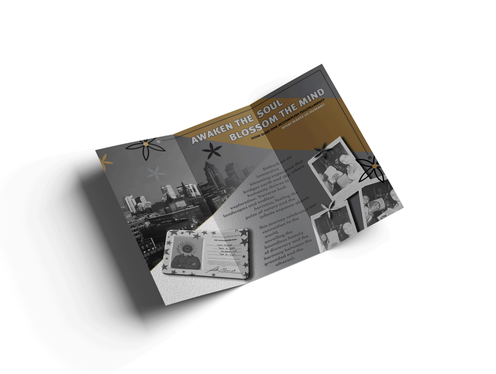
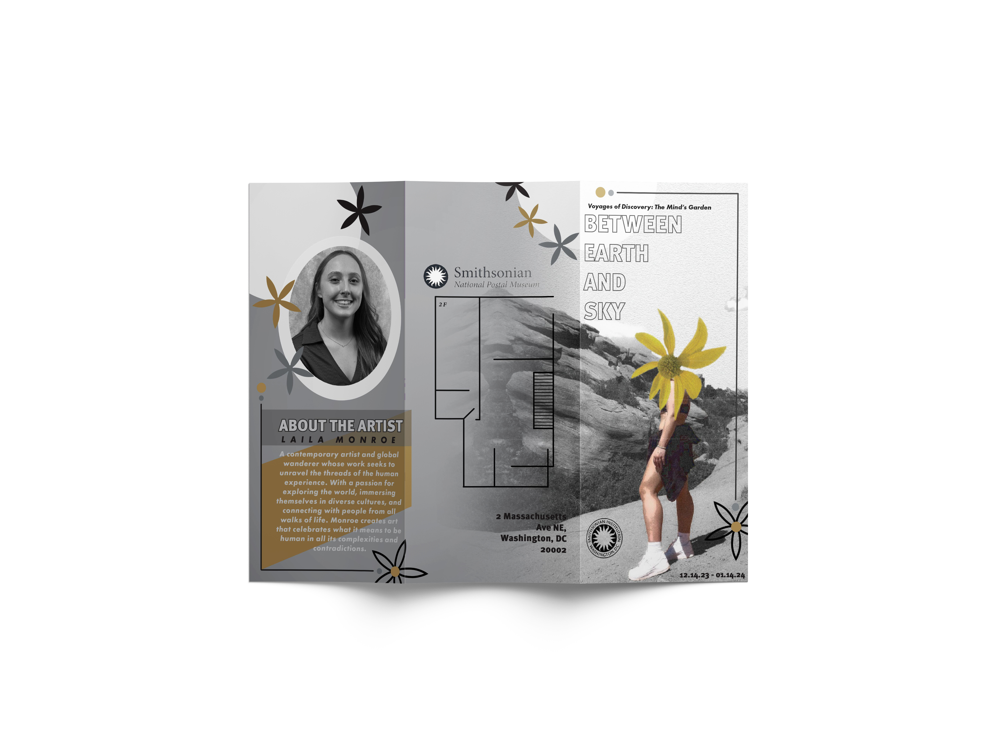
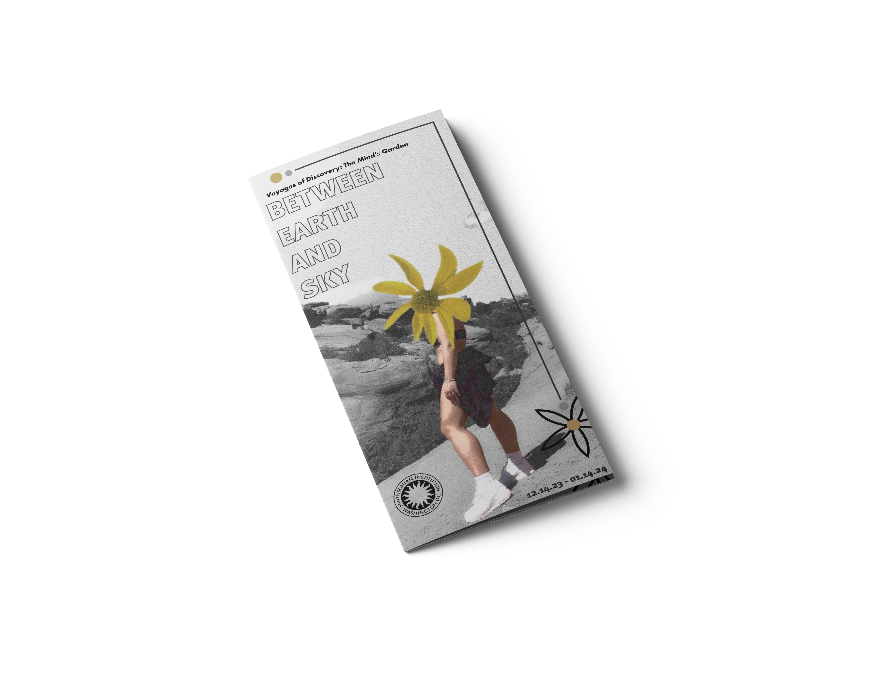

Concept
The visual identity centers on the feeling of existing between natural space and interior thought, using image layering and soft contrast to support the exhibition theme.

Editorial Design / Poster / Brochure
A Smithsonian museum concept built through a poster and brochure system that blends exhibition identity, atmosphere, and storytelling.
This project explores how editorial design can shape the feeling of an exhibition before someone even enters the space. Through print pieces and mockups, I created a visual identity that feels reflective, immersive, and grounded in nature, memory, and discovery.
Between Earth and Sky is a Smithsonian exhibition concept developed through a poster and brochure series. The project focuses on creating a refined museum identity through typography, composition, and imagery that feels thoughtful, atmospheric, and cohesive.
The design system carries a quiet visual rhythm, balancing grayscale imagery with muted gold accents and floral forms to create something that feels both editorial and exhibition-driven.
Poster Design
The poster introduces the exhibition through scale, contrast, and strong hierarchy. The title treatment and muted palette create a visual tone that feels elevated, while the imagery gives the piece an emotional and atmospheric pull.
Rather than feeling overly decorative, the composition is meant to support the idea of discovery and reflection, helping the piece feel appropriate for a museum environment.

Brochure System
The brochure extends the exhibition identity beyond the poster through layout, imagery, and typography that feel cohesive, reflective, and museum-ready.


Design Direction
The visual identity centers on the feeling of existing between natural space and interior thought, using image layering and soft contrast to support the exhibition theme.
Quiet, reflective, refined, and atmospheric. The goal was to make the work feel visually rich without losing clarity or structure.
The brochure system was designed to guide the viewer through the exhibition concept while still functioning as a visually cohesive print experience.
Create a museum-facing identity that feels polished and intentional across multiple print touchpoints, from a public poster to an informational brochure.
Brochure System
The brochure allows the concept to expand into a fuller visual system. It supports the exhibition with additional context, imagery, and layout structure while keeping the same tone established in the poster.
Together, the poster and brochure create a more complete museum identity, showing how editorial design can shape both public-facing promotion and printed visitor materials.

Reflection
This Smithsonian concept gave me the opportunity to work through exhibition branding in a way that felt more atmospheric and story-driven. It pushed me to think about how layout, print hierarchy, and image treatment can all work together to create a polished identity.
It also reflects my interest in design that feels intentional and immersive, especially when the final result balances clarity with mood and visual restraint.